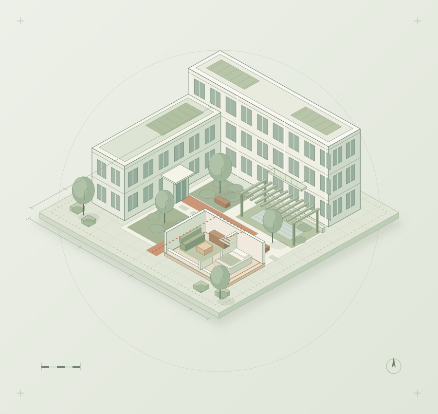

01
Housing & Wellbeing
Housing & Wellbeing
Investigating residential satisfaction and psychological restoration across housing units, buildings and complexes, with a focus on public rental housing and quality of life.
HousingRestoration
SPATIAL DESIGN & HUMAN EXPERIENCE
Seunghee LeeAssistant Professor · Jeonbuk National University
Exploring how everyday environments shape our lives. Research and teaching at the intersection of housing, restorative experience and sustainable spatial design.

01 / RESEARCH
Understanding the relationship between people and their environments—and translating that understanding into thoughtful spatial change.
Housing & Wellbeing
Investigating residential satisfaction and psychological restoration across housing units, buildings and complexes, with a focus on public rental housing and quality of life.
Sustainable Environments
Exploring design strategies that connect human wellbeing and sustainability through WELL, LEED, G-SEED and the SDGs in residential, cultural and interior spaces.
Participatory Spatial Design
Bringing user needs and lived experience into spatial improvements through observation, interviews and design charrettes.
Digital Spatial Design
Connecting generative AI, 3D modeling and real-time visualization with the design process, while exploring representation and experience evaluation in virtual environments.
National Research Foundation of Korea · Principal Researcher
Seoul Metropolitan Government · Co-researcher
National Research Foundation of Korea · Co-researcher
02 / PUBLICATIONS
A selection of journal articles. Follow the DOI or journal links for publication details and access information.
RESEARCH IN PROGRESS
03 / TEACHING
Learning to identify spatial problems, test design ideas and communicate a clear, individual design perspective.
DIGITAL DESIGN · VISUALIZATION
Digital Space Design 2
From AI-assisted ideation to 3D modeling and real-time rendering. Digital tools help students develop spatial proposals and compare design possibilities.
Students compare alternative ideas, develop a selected spatial concept and propose the remodeling of a real space. Models, images and presentation panels communicate design intent.
COMMERCIAL DESIGN · BRAND EXPERIENCE
Space Design Studio 2
Designing commercial spaces around brand identity, function and user experience. Research and concept development inform integrated proposals for spatial layout, circulation, materials and lighting.
Commercial design precedents and user needs inform a design direction that reflects brand identity and operational requirements. Layout, circulation, color, materials and lighting are developed together into functional, visually coherent proposals and visualized to communicate design intent.
DESIGN COMMUNICATION · EDITORIAL
Design Portfolio
Turning design outcomes and the thinking behind them into a clear visual narrative. Students learn to express their own perspective and design capabilities.
The course develops project selection, documentation, page composition and visual hierarchy. Interim reviews and presentations refine the portfolio and its communication.
ADVANCED STUDIO · SPATIAL PLANNING
Space Design Studio 3
Developing spatial planning skills through an understanding of users and everyday contexts. The studio connects design theory and practice, turning research and concepts into spatial proposals.
The focus is on interpreting spatial problems and establishing a clear design direction. Spatial composition and representation support the ability to explain design decisions and communicate the purpose of a proposal.
COLOR · MATERIALS · SPATIAL HARMONY
Interior Design Coordination
Exploring relationships among color, materials, furniture and lighting. The course develops an eye for coordinating interior elements into a coherent design that responds to everyday life and spatial function.
Color, texture, form and arrangement are considered in relation to atmosphere and use. The focus is on balancing function and aesthetics, using the relationships between interior elements to express a clear design intention.
INTEGRATED PROJECT · DESIGN SYNTHESIS
Integrated Graduation Project
Bringing together knowledge and design experience in an integrated graduation project. Students explore the meaning of a chosen theme, develop a spatial proposal and articulate their own design perspective.
View the 2026 Graduation ExhibitionA clear line of reasoning connects the initial question, research, design concept, spatial planning and final representation. Documenting both the outcome and the decisions behind it strengthens the project and its communication.
04 / ABOUT
Seunghee Lee is an Assistant Professor in the Department of Housing Environmental Design at Jeonbuk National University. Her research explores how residential and interior environments relate to human experience and wellbeing.
She studied space design in France and earned her Ph.D. in Interior Architecture and Built Environment at Yonsei University. Experience in exhibition and spatial design informs her research and teaching on the places of everyday life.
Interior Architecture and Built Environment
Space Design · Strasbourg, France
Space Design · Lyon, France
05 / CONTACT
For research collaboration, academic exchange and spatial design education.
Department of Housing Environmental Design
College of Human Ecology · JBNU
Room 513, College of Human Ecology
567 Baekje-daero, Deokjin-gu, Jeonju, South Korea